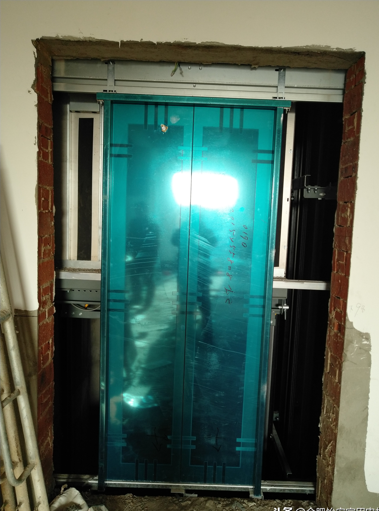
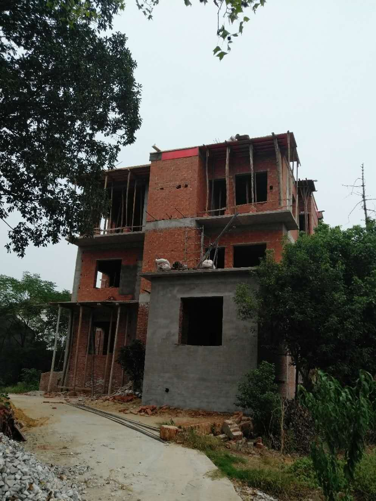
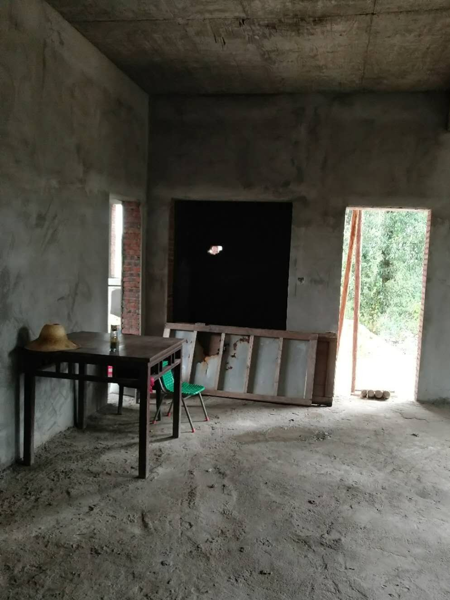
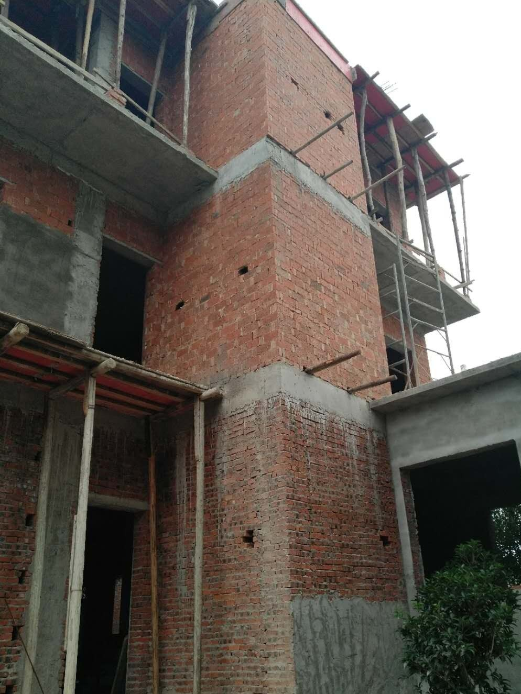
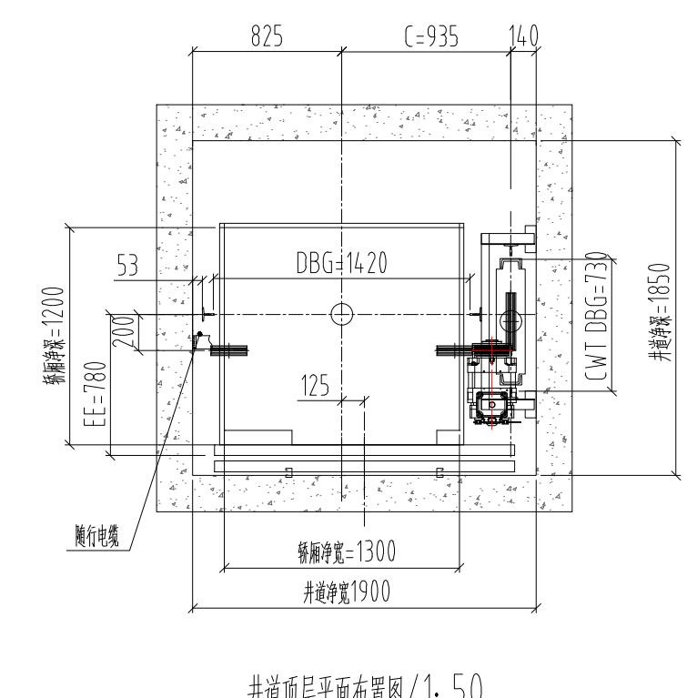
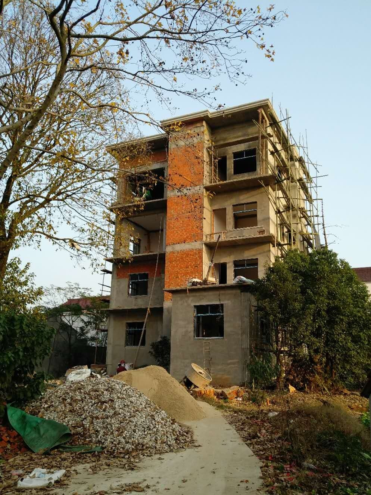
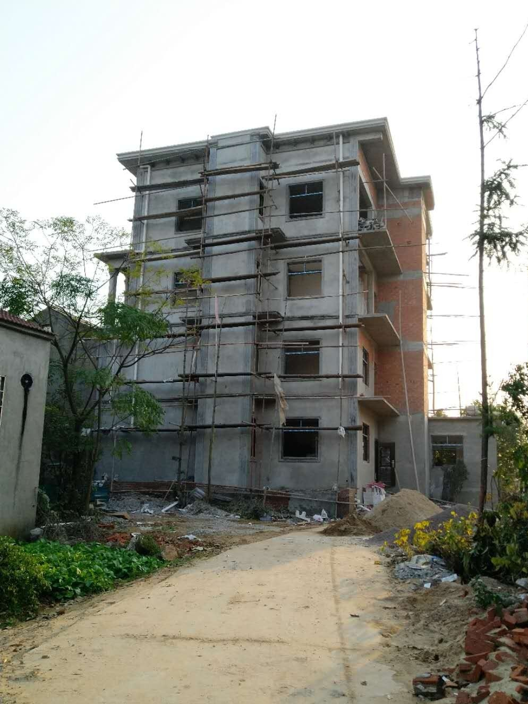

案例背景
很多自建房业主考虑家用电梯时，第一反应是先画井道，或者先问价格。但这个案例告诉我们，顺序不能反。因为如果墙体不能承重、地坑条件不清楚、井道结构没有先判断，后面再去定设备，往往会绕很多弯路。
安徽安庆这个农村自建别墅案例里，井道和地坑已经有一定基础，但墙体本身不能直接承重。也就是说，这不是“完全没有条件”，而是“条件有，但受力方式要重做”。
现场条件
| 项目 | 记录 |
|---|---|
| 项目类型 | 安徽安庆农村自建别墅家用电梯 |
| 地坑深度 | 约 1 米 |
| 井道尺寸 | 约 1.9 米宽、1.85 米深 |
| 承重条件 | 没有现成混凝土立柱，墙体不能直接承担主要荷载 |
看起来空间不小，但关键问题不在面积，而在结构。最重要的不是把井道再做大，而是先想清楚受力怎么走。
方案怎么定
因为井道墙体不能直接承重，最终采用的是对墙体要求较低的侧对重曳引龙门架式方案。这个判断很有现实意义。它说明在自建房里，很多方案不是“选贵一点的设备就行”，而是要先选对结构路径。
图纸里还提到，轿厢面积不能超过约 1.6 平方米。这个限制不是为了追求小，而是为了和当前井道、地坑以及结构条件匹配。
对业主的参考价值
如果你家也是农村自建房、乡镇别墅，或者准备在原有住宅里加装家用电梯，这个案例最值得参考的是前期判断：先确认地坑条件是否成立，再确认井道墙体能不能承重，最后才定电梯设备和轿厢大小。
很多现场问题不是施工当天才出现，而是前期判断顺序错了。这个案例把“先看结构，再看设备”的逻辑讲得很清楚。
俞工点评
自建房装电梯，最稳妥的顺序永远是先复尺、再看承重、再定井道、最后定设备。顺序错了，后面再补，成本通常更高。
常见问题FAQ
农村自建别墅已经有井道，还要重新判断什么？
还要判断地坑深度、墙体承重和楼层之间的安装空间。井道有了，不代表结构就一定合适。
地坑 1 米深够不够？
是否够用要看具体电梯方案和结构条件，不能只看一个数字。这个案例里，地坑只是整体判断的一部分。
墙体不能承重，为什么还能做家用电梯？
因为可以换成更适合的结构方案，把主要受力放到更合适的位置，而不是直接依赖原墙体。
自建房装电梯，最怕哪一步做错？
最怕先定井道尺寸，再去找设备。正确顺序应该是先判断结构条件，再决定井道和设备。
图片记录








如果你家也是自建房、别墅或楼梯中间空间想加装家用电梯，建议先让俞工根据现场尺寸、井道条件、地坑和顶层高度做一次判断，再确定方案和预算。咨询电话：181-1967-0605。